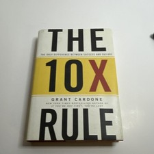

Library › Business & Startups
The 10X Rule — Summary & Key Lessons

The only difference between success and failure — set targets 10 times bigger and take 10 times the action.
📖 OPEN THE FULL INTERACTIVE BREAKDOWN →🌐 Read it in Hindi, Hinglish, Gujarati, Tamil & 22 more languages — free, with audio.
💡 The Big Idea
Cardone's thesis is a double correction: people set targets too LOW (average goals produce average effort — and 'average' in Cardone's math is a failing formula because everyone underestimates the effort required), and then take too little ACTION (the real 10X is the effort side: whatever you think a goal requires, budget ten times the calls, attempts, follow-ups, and years). His framework: success is your DUTY (not a preference — treating it as optional is why it stays optional), there is no shortage of success (it's created, not competed for), take MASSIVE ACTION (the fourth degree of action, past 'doing nothing,' 'retreating,' and the most dangerous level — 'normal levels'), dominate your sector rather than compete in it, and treat fear as the signal to act faster. Controversial, hyperbolic, and — for the chronically under-aiming — exactly the calibration slap required.
🧠 The 4 Key Lessons
Lesson 1: The 10X Target: Aim Higher Because Low Aims Lie
Chapters 1–4: What Is the 10X Rule / Why Average Fails
Cardone's diagnosis of failure's root: not laziness but MIS-CALIBRATION — people set 'realistic' targets (calibrated to look achievable, to avoid disappointment, to fit others' expectations), then discover even those require far more effort than estimated, run out of fuel, and quit demoralized. The 10X correction attacks both ends: set targets TEN TIMES your instinct (the 10X goal excites enough to survive the grind — small goals can't generate big energy; and even 'failing' a 10X goal typically lands beyond the 1X target), and simultaneously budget TEN TIMES the effort your estimate suggests (the estimate is always wrong, always in the same direction). His supporting law: NEVER REDUCE THE TARGET — when progress stalls, the amateur shrinks the goal to protect feelings; the professional multiplies the actions. Average, he hammers, only looks safe: average marriages, savings, and businesses are all one surprise away from crisis — 'realistic' is just pre-negotiated surrender.
📖 Example: Cardone's own ledger supplies the exhibits: his first business took years longer and multiples more effort than every projection — the 10X effort estimate, he insists, wasn't philosophy but post-mortem arithmetic. His sales-floor version: the rep targeting 2… Read the full example →
⚡ Do this: Take your current #1 goal and write its 10X version (income, users, reach — whatever the metric). Don't commit to the number yet — commit to the QUESTION: 'what system would the 10X version force me to build?' Then build the first component of that system this week.
Lesson 2: Success Is Your Duty — and There's No Shortage of It
Chapters 5–7: Duty / No Shortage / Assume Control
Two mindset renovations. DUTY: treating success as optional — a preference, a 'nice to have' — guarantees under-investment; Cardone demands the ethical reframe: succeeding at your potential is a DUTY owed to your family, your future, and everyone your capability could serve — approached 'the way a mother approaches protecting her child': non-optional, non-negotiable, no fallback position entertained (fallback plans, he argues, are quiet instructions to fail toward). NO SHORTAGE: success isn't a limited commodity others deplete — it's CREATED, not competed for (a scarcity view breeds envy, copying, and permission-seeking; the abundance view breeds production). CONTROL: the companion habit is radical responsibility — treat everything that happens to you, including the 'unfair,' as yours to respond to ('I decide,' not 'it happened'): victims and creators, in Cardone's binary, are separated not by circumstances but by which sentence they rehearse.
📖 Example: Cardone's duty exhibit is his own origin: aimless and addicted at 25, the turnaround began — by his telling — with reclassifying success from wish to obligation, treating sales calls with the mother-and-child seriousness his previous self reserved for… Read the full example →
⚡ Do this: Write the duty statement: WHO specifically is owed your success (family, team, future self), and what it costs them when you under-aim. Post it where the snooze button lives. And run the control swap for one week: every 'it happened to me' sentence gets rewritten as 'here's my response.'
Lesson 3: The Four Degrees of Action — Choose Massive
Chapters 8–9: The Four Degrees / Massive Action
All people operate at one of four action levels: (1) DO NOTHING (obvious), (2) RETREAT (act in reverse — avoid, shrink, protect), (3) NORMAL LEVELS (the most dangerous — because it looks responsible: average effort producing average results, fully camouflaged as diligence; the level society trains, employers accept, and mediocrity requires), and (4) MASSIVE ACTION — the 10X native level: activity so far beyond normal that it creates 'new problems' (too many leads, too much demand, criticism from the normal-level crowd — problems Cardone calls the SIGN you're at level four). His operational rules: act despite fear (fear is the indicator of exactly what to do next, and it grows with delay — 'starve the fear of its favorite food: time'); make your presence UNAVOIDABLE in your market (omnipresence as strategy); and treat criticism as confirmation — 'when people start criticizing your level of action, you're on the right track': level-three people always attack level-four behavior, because it exposes the camouflage.
📖 Example: Cardone's real-estate arc demonstrates level four: while competitors sent occasional mailers, he called, mailed, visited, and followed up at rates the industry called excessive — building holdings through sheer contact volume during the exact years… Read the full example →
⚡ Do this: Grade yourself honestly (1–4) in each major domain: career, health, relationships, money. For your most important domain, define what LEVEL FOUR would look like this week (usually: 10X the outreach/attempts/reps) — and do one level-four day. Note both results and who criticizes; both are data.
Lesson 4: Obsession, Omnipresence & Burning the Excuse List
Chapters 10–23: Obsession / Expand, Never Contract / Excuses
The closing chapters install the operating culture. OBSESSION: society medicates what it should celebrate — being 'obsessed' with your mission is, in Cardone's frame, the only appropriate relationship to a 10X target ('until you become completely obsessed with your mission, no one will take you seriously'). EXPAND, NEVER CONTRACT: in fear cycles (recessions, setbacks), the herd retreats — cuts marketing, hoards, waits; the 10X move is counter-cyclical expansion, buying attention and market share at the exact moment they're cheapest. OMNIPRESENCE: the goal is to be EVERYWHERE your market looks — content, calls, mail, events — until your name is the category's wallpaper. And the EXCUSE demolition: Cardone's list of success myths ('I don't have time/money/connections,' 'the market's bad,' 'I'll do it later') gets one uniform answer — excuses are chosen narratives that always cost more than the effort they avoid; the excuse list and the 10X life cannot coexist, so one must be burned, publicly, today. The book's final calibration: whatever you're currently doing — 10X the target, 10X the action, and 10X the timeline patience.
📖 Example: The counter-cyclical exhibit Cardone rides hardest: 2008 — while competitors slashed marketing to survive, he multiplied output (content, seminars, calls), on the logic that attention was suddenly discounted and rivals voluntarily silent; the post-crisis… Read the full example →
⚡ Do this: Burn the list: write your five most-used excuses verbatim, then beside each, the action it has been protecting you from — do one of those actions within 48 hours. And pick your omnipresence lane: for 90 days, show up in your market DAILY (one post, one call batch, one appearance) — wallpaper is hung one sheet at a time.
✅ 5-Step Action Plan
- Write the 10X version of your #1 goal; build its first system component.
- Post the duty statement; run the control-swap week.
- Grade your four degrees; execute one level-four day.
- Expand where others contract; start the 90-day omnipresence streak.
- Burn the excuse list — one protected action done in 48 hours.
💬 Best Quotes from The 10X Rule
- “Success is your duty, obligation, and responsibility.”
- “Never reduce a target. Instead, increase actions.”
- “Average is a failing formula.”
Interactive version: mark lessons as read, listen in your language, share quote cards.